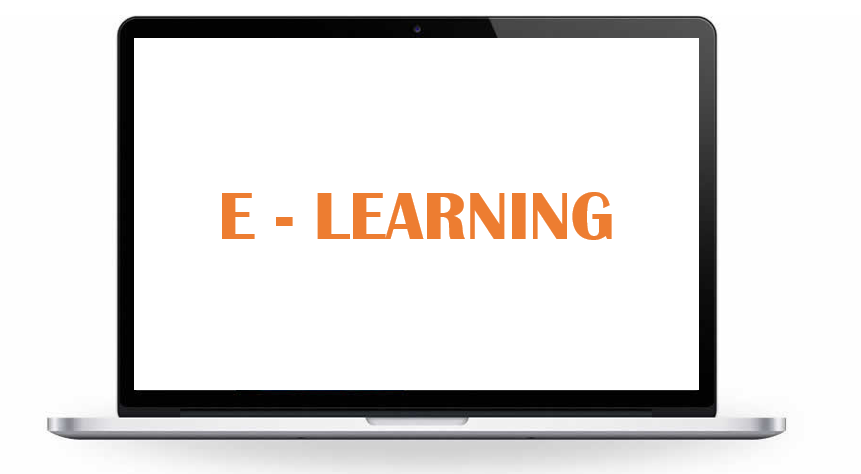

| No | NIP | Nama | Pangkat | Golongan | Jabatan | Ket |
|---|---|---|---|---|---|---|
| 1 | 19580723-198503-1-001 / 0023075803 | Dr. H. Aminuddin Bakry, M.S. | Pembina Utama Muda | IV/c | Lektor Kepala | Ekonomi Energi Listrik, Statistik, Evaluasi Pendidikan |
| 2 | 19570707-198601-1-001 / 0007075710 | Drs. Marsud Hamid, M.Kes. | III.d | Lektor | Kesehatan Dan Keselamatan Kerja, Menggambar Teknik, Etika Profesi Kejuruan | |
| 3 | 19570402-198601-1-002 / 0002045702 | Drs. Syarifuddin Kasim, M.T. | IV.a | Lektor Kepala | Mesin Listrik, Sistem Proteksi, Trafo | |
| 4 | 19580721-198601-1-001 / 0021075803 | Prof. Dr. Ir. Yunus Tjandi, M.T. | IV.e | Guru Besar | Proteksi Sistem Tenaga Listrik, Kecerdasan Buatan, Rancangan Instalasi Tenaga Listrik | |
| 5 | 19530818-198601-1-002 / 0027045202 | Ir. H. Muddassir, M.T. | IV.b | Lektor | Teori Medan, Teknologi Tegangan Tinggi, Proteksi Sistem Tenaga Listrik | |
| 6 | 19621005-198702-1-001 / 0005106204 | Prof. Dr. H. Syahrul, M.Pd. | IV.b | Guru Besar | Ilmu Penelitian dan Evaluasi Pendidikan, Statistik, Mesin Listrik | |
| 7 | 19571022-198703-1-004 / 0022105706 | Dr. Ir. Muh. Nasir Malik, M. T. | IV.b | Lektor Kepala | Fisika Teknik, Instalasi Listrik, Distribusi Tenaga Listrik | |
| 8 | 19580108-198701-2-001 / 0008015802 | Dr. Ir. Riana T Mangesa, M.T. | IV.c | Lektor Kepala | Pembangkit Listrik, Matematika Teknik, Pendidikan Teknologi Kejuruan. | |
| 9 | 19601231-198803-1-012 / 0031126024 | Ir. Sugeng A. Karim, M.T. | IV.a | Lektor Kepala | Instrumentasi Listrik, Medan Elektromagnetik, Teknik Pengaturan | |
| 10 | 19630723-199003-1-003 / 0023076302 | Drs. H. Alimuddin Sa’ban Miru, M.Pd. | IV.a | Lektor Kepala | Perenc.Pembelajaran, Evaluasi Pendidikan, Pengukuran Listrik. | |
| 11 | 19631231-199003-1-028 / 0031126338 | Dr. Ruslan, M.Pd. | IV.c | Lektor Kepala | Elektronika Daya, ARTL, Kewirausahaan | |
| 12 | 19650304-199112-1-001 / 0004036504 | Dr. Syamsurijal, M.T. | IV.b | Lektor Kepala | Elektronika Daya, Software Aplikasi Komputer, PKLH | |
| 13 | 19650317-199303-1-001 / 0017036502 | Dr. M. Yusuf Mappeasse, M.Pd. | IV.a | Lektor Kepala | Media Pembelajaran, Teknik Digital, Rangkaian Elektronika | |
| 14 | 19691018-199403-1-001 / 0018106905 | Dr. Abd. Muis M., M.Pd., M.T. | IV.a | Lektor Kepala | Aplikasi Komputer, Praktek Elektronika, Dasar Komputer | |
| 15 | 19680510-199702-1-001 / 0010056807 | H. Harifuddin, S.T., M.T. | IV.a | Lektor Kepala | Matematika Teknik, Rangkain Listrik, Mesin Listrik | |
| 16 | 19700207-199702-1-001 / 0007027002 | Dr. Iwan Suhardi, S.T., M.T. | III.d | Lektor Kepala | PLC, Aplikasi Komputer STL, Fisika II | |
| 17 | 19711023-199903-1-001 / 0023107104 | Al Imran, S.T., M.T. | IV.a | Lektor Kepala | ASTL, Rangkaian Listrik, Matematika Teknik | |
| 18 | 19751115-200004-2-002 / 0015117508 | Dyah Darma A, S.T., M.Tel.Eng. | III.b | Lektor | Kecerdasan Buatan, Mikroprosessor, Teori Bahasa dan Otomata | |
| 19 | 19750505-200501-1-001 / 0005057513 | Dr. Mustari S. Lamada, S.Pd. M.T. | III.c | Lektor | Pemrog. Web, PTK, Interaksi Manusia Dan komputer | |
| 20 | 19770724-200501-1-003 / 0024077705 | Hasrul Bakri, S.Pd., M.T | III.c | Lektor | Instalasi Listrik 1, Instalasi Listrik 2, Distribusi Tenaga Listrik | |
| 21 | 19761012-200801-1-008 / 0012107606 | Firdaus, S.Pd., M.T. | III.c | Lektor | Pembangkit Tenaga Listrik, Sistem Distribusi, Elektronika Daya | |
| 22 | 19720616-200003-1-003 / 0016067208 | Zulhajji, S.T., M.T | III.c | Lektor | Mesin Listri 1, Mesin Listrik 2 Ekonomi Energi Listrik | |
| 23 | 19710202-200912-2-001 / 0002027100 | Muliaty Yantahin, S.T., M.T | III.b | Asisten Ahli | Matematika Teknik, Matematika Dasar, K3 | |
| 24 | 19740615-199703-1-002 / 0015067407 | Udin Sidik Sidin, S.Pd., M.T. | III.c | Lektor | P. Arsitektur Komputer, RPL, Jaringan Komputer | |
| 25 | 19750720-201012-2-001 / 0020077512 | Dr. Sanatang., S.Pd., M.T. | Penata Muda Tingkat I | III.b | Asisten Ahli | Praktik Dasar dan Pengukuran, Hadware, Software Aplikasi Komputer |
| 26 | 19800809-201012-1-002 / 0009088003 | Dr. Satria Gunawan Zain, S.Pd., M.T | III.b | Asisten Ahli | Pengolahan Citra Digital, Mikrokontroler, Rangkaian Elektronika | |
| 27 | 19781103-201012-1-002 / 0003117804 | Jumadi M. Parenreng, S.ST, M.Kom | III.b | Asisten Ahli | Basis Data, Sistem Operasi Berbasis Jaringan, Pengantar Arsitektur Komputer | |
| 28 | 19761103-201012-1-002 / 0003117600 | Suhartono, S.Kom., M.Kom | III.c | Lektor | SBOJ, Sistem Operasi, Praktikum Jaringan Dasar | |
| 29 | 19840412-201404-2-001 / 0412048405 | Dyah Vitalocca, S.T., M.Pd | III.b | Asisten Ahli | Algoritma Pemrograman, Sistem Operasi Berbasis Jaringan, Pemrograman Perangakat Mobile | |
| 30 | 19861226-201404-1-001 / 0026128601 | Edi Suhardi Rahman, S.Pd.,M.Pd. | III.b | Asisten Ahli | Matematika Diskrit,Dasar-Dasar Pemrograman, Komputer Grafis | |
| 31 | 19741116-200112-1-001 / 0016117404 | Muliadi, S.Pd.,M.T. | III.c | Asisten Ahli | Sistem Telekomunikasi, Praktik Teknik Kendali | |
| 32 | 19860326-201504-1-001 / 0926038601 | Fathahillah, S.Pd, M.Eng. | III.b | Asisten Ahli | PLC, Praktikum Basis Data, Sistem Microprocesor | |
| 33 | 19890115-201504-2-001 / 0015018904 | Veronika Asri T., S.Pd., M.Pd. | III.b | Asisten Ahli | Praktikum Basis Data, Organisasi & Arsitektur Komputer, Perangkat Keras | |
| 34 | 19850920-201504-1-001 / 0020098503 | Muhammad Riska, S.Pd., M.Pd. | III.b | Asisten Ahli | Profesi Keguruan, Media Pendidikan, Sistem Operasi Komputer | |
| 35 | 19821215-201504-1-001 / 0015128207 | Abdul Rahman Patta, S.Kom., M.T. | III.b | Asisten Ahli | Pemrograman, Jaringan Komputer, Sistem Operasi |
Copyright 2021 by Yua